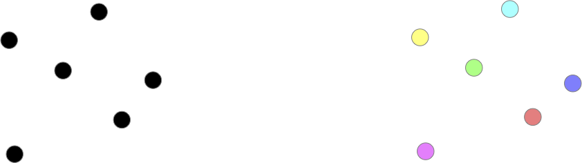
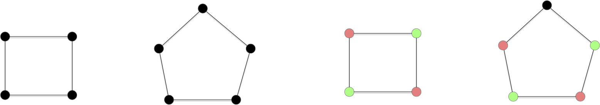
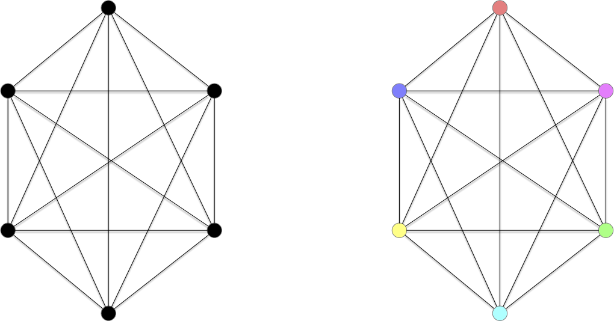
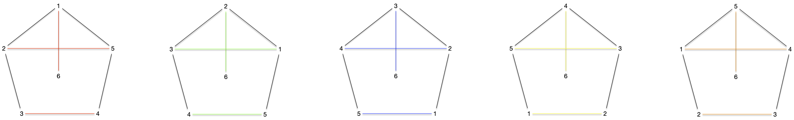

Problème de la coloration d'un graphe
Il existe deux notion de colorabilité dans les graphes : la coloration de sommets et la coloration d'arêtes. Dans les deux cas, on veut colorier avec deux couleurs différentes des éléments (sommets ou arêtes respectivement) qui se touches (via une arête ou un sommet, respectivement).
Bien que ces deux façons de colorer des graphes soient liées, elles possèdent chacune des propriétés et théorèmes intéressants, nous en verront quelques uns.
Définitions
Coloration des sommets
Définition
Soit $G=(V, E)$ un graphe. Une $k$-coloration de $G$ est une fonction $c: V \to \{1,\dots, k\}$ telle que pour toute arête $xy \in E$, $c(x) \neq c(y)$.
Le graphe discret par exemple admet une 1-coloration, 2-coloration, ..., jusqu'à une $n$-coloration :

On voit vite que ceci se généralise et que l'on a :
Proposition
Si un graphe $G$ admet une $k$-coloration de ses sommets, il admet également une coloration avec exactement $k \leq k' \leq v(G)$ couleurs.
preuve
preuve
Il suffit de remplacer une des couleurs par plusieurs autres.
Continuons notre exploration en essayant de chercher le nombre minimum de couleurs possible pour colorer les sommets d'un graphe. Les cycles paires admettent une 2-coloration (mais pas une 1-coloration puisqu'ils ont une arête) et les cycles impaires quant à eux uniquement une 3-coloration :

Montrer que :
- les cycles paires admettent une coloration en 2 couleurs mais pas en 1 couleur,
- les cycles impaires admettent une coloration en 3 couleurs mais pas en 2 couleur,
corrigé
corrigé
Tout graphe possédant au moins une arête ne peut avoir de 1-coloration. C'est le cas ds cycles puisqu'ils ont tous au moins 3 sommets et donc 3 arêtes.
- Pour tout cycle paire $x_0x_1\dot x_{2p}$ on peut donner la couleur $i \mathbin{\small\%} 2$ au sommet $x_i$.
- une 2 couleur pour un cycle impair va forcer l'alternance des couleurs et on se retrouvera à la fin avec 2 couleurs identique pour une arête. Il faut donc donner une troisième couleur à ce dernier sommet.
Et les cliques ?

Montrer que :
- $\chi(K_n) = n$
corrigé
corrigé
S'il existait une coloration en strictement moins de $n$ sommet, il existerait deux sommets différents ayant même couleurs. Comme il existe une arêtes entre ces deux sommet ceci est impossible et contredit notre hypothèse.
Explicitons cette borne minimum de coloration :
Définition
Soit $G=(V, E)$ un graphe. On note $\chi(G)$ le nombre minimum de couleurs qu'il faut pour colorier ses sommets et on l'appelle nombre chromatique de $G$.
On a déjà quelques $\chi$ pour des classes de graphes connus :
- $\chi(G) = 1$ si (et seulement si) $G$ est le graphe discret,
- $\chi(G) = 2$ si $G$ est un chemin ou un cycle de longueur pair,
- $\chi(G) = 3$ si $G$ est un chemin ou un cycle de longueur impair,
- $\chi(G) = v(G)$ si $G$ est le graphe complet.
Et une première borne évidente :
Proposition
Pour tout graphe $G$ on a :
Pour un graphe $G$, $\omega(G)$ est la taille de sa plus grande clique.
Le lecteur attentif aura également remarqué que la notion de colorabilité des sommets est équivalente à la notion de graphe k-parti.
Coloration des arêtes
Définition
Soit $G=(V, E)$ un graphe. Une $k$-coloration des arêtes $G$ est une fonction $c: E \to \{1,\dots, k\}$ telle que pour triplet de sommets $x \neq y \neq z \in E$ si $xy, xz \in E$ alors $c(xy) \neq c(xz)$.
On peut tout de suite appliquer à la coloration des arêtes la propriété évidente de la coloration des sommets :
Proposition
Si un graphe $G$ admet une $k$-coloration de ses arêtes, il admet également une coloration avec exactement $k \leq k' \leq v(G)$ couleurs.
preuve
preuve
Il suffit de remplacer une des couleurs par plusieurs autres.
Et qu'il existe un minimum :
Définition
Soit $G=(V, E)$ un graphe. On note $\chi'(G)$ le nombre minimum de couleurs qu'il faut pour colorier ses arêtes et on l'appelle index chromatique de $G$.
Les cycles paires admettent une 2-coloration et les cycles impaires uniquement une 3-coloration de leurs arêtes :

Montrer que :
- $\chi'(G) = 2$ pour les cycles paires,
- $\chi'(G) = 3$ pour les cycles impaires,
corrigé
corrigé
Les arguments sont identiques à ceux avancés pour la coloration des sommets
Et les cliques ?

Montrer que $\chi'(K_n) = n-1$
corrigé
corrigé
Il ne peut exister une coloration des arêtes en strictement moins de $n-1$ couleurs puisque tout sommet à $n-1$ voisins.
Pour trouver une coloration en $n-1$ couleurs on utiliser le principe des tournois de sport comme on l'a déjà fait pour les couplages.
C'est un cas particulier du Théorème de Baranyai.
Le lecteur attentif aura remarqué que la notion de colorabilité des arêtes se rapproche de la notion de couplage : la $k$ colorabilité des arêtes correspond à une partition en couplages de $G$. Ce qui permet de borner notre problème :
Proposition
Pour tout graphe $G$ on a :
Pour un graphe $G$, $\Delta(G)$ est la valeur du plus grand degré.
preuve
preuve
clair
Utilité pratique
Enfin, ces deux types de colorations ont des applications pratiques nombreuses et différentes.
À retenir
Cette modélisation est très pratique lorsque l'on a des ressources partagées dont on veut maximiser l'utilisation.
sommets
Ces problèmes sont souvent liés à des problèmes d'incompatibilités.
Résoudre des sudoku
Faire des plan de table
TBD ou résoudre des problèmes d'emploi du temps. p45 https://mathweb.ucsd.edu/~gptesler/154/slides/154_graphcoloring_20-handout.pdf
Optimiser la compilation de programmes
p4 http://o.togni.u-bourgogne.fr/CMGraphesCh3.pdf et p49 https://mathweb.ucsd.edu/~gptesler/154/slides/154_graphcoloring_20-handout.pdf
Colorer des cartes de géographie
TBD donner le problème et dire qu'on y reviendra.
Aretes
Ces problèmes sont souvent liés à des problèmes de couplages.
Tournois
On l'a déjà vu dans la partie couplage, mais le problème des tournois de sport s'explicite plus joliment sous la forme d'un problème de coloration d'arêtes car il incorpore directement toutes les contraintes.
L'algorithme qui explicite directement le problème est appelé round robin scheduling. Noter qu'il est différent de celui utilisé pour le couplage. Pour $K_6$ ceci donne :

Affectation de ressources
Attention
TBD à ne pas trout modéliser par des couleurs. à 5min45 https://www.youtube.com/watch?v=y4RAYQjKb5Y
On le verra le problème général de la coloration est NP-complet donc ne modélisez pas par un problème NP-complet un problème simple. Les taxis, on l'a vu se résolvent facilement par un algorithme glouton ! Ca arrive plus souvent qu'pon ne le pense, doc faite attention lorsque vous modélisez votre problème : essayez d'être le plus précis possible.